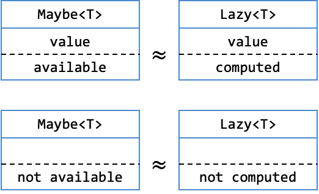

Lab 6: The Art of Being Lazy
Basic Information
- Deadline: 24 October 2023, Tuesday, 23:59 SST
- Marks: 20
- Weightage: 2%
Prerequisite
- Caught up to Unit 32 of Online Notes.
Files
In the directory, you should see the following files:
- Java Files:
cs2030s/fp/BooleanCondition.class: ABooleanConditionclass.cs2030s/fp/Consumer.class: AConsumerclass.labcs2030s/fp/Producer.class: AProducerclass.cs2030s/fp/Transformer.class: ATransfomerclass.cs2030s/fp/Maybe.classandcs2030s/fp/Maybe$None.class: AMaybeclass.cs2030s/fp/Lazy.java: A template forLazyclass.- Please update the method signature to make the type more flexible.
CS2030STest.java: The main tester class.Test1.java-Test6.java: A tester.
Preliminary
This is a follow-up from Lab 5. In Lab 5, we have constructed a generic class Maybe<T>, which is a container for an item of type T which may be null. We are now going to use Maybe<T> class to construct Lazy<T>.
If you have not finished Lab 5, do not worry, we give a possible implementation of Lab 5 as a class file. Note that this class file was compiled on PE node using Java 17 compiler. If you are not using Java 17 or if you are not working on the PE node, you may get different result. Unlikely, but the possibility is there.
Maybe Class
The class Maybe<T> has the following public methods. You cannot use any methods that are not public from outside the package.
| Method | Description |
|---|---|
static <T> Maybe<T> of(T val) |
Creates a Maybe<T> with the given content val if val is not null. Otherwise, returns the shared instance of None<?>. |
static <T> Maybe<T> some(T val) |
Creates a Maybe<T> with the given content val which may be null. |
static <T> Maybe<T> none() |
Creates a Maybe<T> without any content, this is guaranteed to return the shared instance of None<?>. |
String toString() |
Returns the string representation of Maybe<T>. |
boolean equals(Object obj) |
|
<U> Maybe<U> map(Transformer<? super T, ? extends U> fn) |
|
Maybe<T> filter(BooleanCondition<? super T> pred) |
|
<U> Maybe<U> flatmap(Transformer<? super T, ? extends Maybe<? extends U>> fn) |
|
T orElse(Producer<? extends T> prod) |
|
void ifPresent(Consumer<? super T> cons) |
|
The Basics of Being Lazy
Programming languages such as Scala support lazy values, where the expression that produces a lazy value is not evaluated until the value is needed. Lazy value is useful for cases where producing the value is expensive, but the value might not eventually be used. Java, however, does not provide a similar abstraction. So, you are going to build one.
This task is divided into several stages. You are highly encouraged to read through all the stages to see how the different levels are related.
You are required to design a single Lazy<T> class as part of the cs2030s.fp package with two fields. You are not allowed to add additional fields to Lazy.
1 2 3 4 5 6 | |
Flexible Type
While you cannot add new fields, you should make the current field more flexible whenever possible.
Furthermore, in all discussion below, the method signature given may not be the most flexible. Your task is to determine if they can be made more flexible.
Constraints
You should minimize the use of conditional statements and conditional expressions. In many cases, this can be done by using the appropriate methods from Maybe<T>. You are also not allowed to have nested class within Lazy<T> to avoid conditional statements/expressions by using polymorphism.
If you have done the design correctly, you will have no conditional statements/expressions except for the equals method.
The basic idea is that we can match the concept of None<T> to a lazy value that is not yet computed and the concept of Maybe<T> (that is not None<T>) to a lazy value that is already computed. The proper name for this is that they are isomorphic.
The visualisation is shown below. Note that the value above the dashed line is the content of the box while the text below the dashed line represents the context. The context of Maybe<T> is that the value is either available or not available (i.e., null). On the other hand, the context of Lazy<T> should be that the value is either computed or not yet computed.

Compiling Lazy
Note that since we provide only the .class files for Maybe<T> and other interfaces, you may need to compile Lazy<T> with the following command from the lab6-<username> directory
1 | |
Task 1: Basic
Define a generic `Lazy`` class to encapsulate a value with the following operations:
static of(T v)method that initializes theLazyobject with the given value.static of(Producer<T> s)method that takes in a producer that produces the value when needed.get()method that is called when the value is needed. If the value is already available, return that value; otherwise, compute the value and return it. The computation should only be done once for the same value.toString(): returns"?"if the value is not yet available; returns the string representation of the value otherwise.- You are encouraged to use
String.valueOf(obj)instead ofobj.toString()to avoid runtime error whenobjisnull.
- You are encouraged to use
Immutable?
For our Lazy<T> to be immutable and to make the memoization of the value transparent, toString should call get() and should never return "?". We break the rules of immutability and encapsulation here, just so that it is easier to debug and test the laziness of your implementation.
Sample Usage
1 2 3 4 5 6 7 8 9 10 11 12 13 14 15 16 17 18 19 20 21 22 23 24 25 26 27 28 29 30 31 32 33 34 35 36 37 38 39 40 41 42 43 44 45 46 47 48 49 50 51 52 53 | |
You can test your code by running the Test1.java provided. The following should compile without errors or warnings. Make sure your code follows the CS2030S Java style.
1 2 3 4 | |
Task 2: Map and FlatMap
Now let's add the map and flatMap method. Remember that Lazy should not evaluate anything until get() is called, so the function f passed into Lazy through map and flatMap should not be evaluated until get() is called. Furthermore, they should be evaluated once. That result from map and flatMap, once evaluated, should be cached (also called memoized), so that function must not be called again.
Sample Usage
1 2 3 4 5 6 7 8 9 10 11 12 13 14 15 16 17 18 19 20 21 22 23 24 25 26 27 28 29 30 31 32 33 34 35 36 37 38 39 40 | |
You can test your code by running the Test2.java provided. The following should compile without errors or warnings. Make sure your code follows the CS2030S Java style.
1 2 3 4 | |
Task 3: Filter and Equality
Write a filter method, which takes in a BooleanCondition and lazily tests if the value passes the test or not. Returns a Lazy<Boolean> object. The BooleanCondition must be executed at most once.
Then write an equals, which overrides the equals method in the Object class. equals is an eager operation that causes the values to be evaluated (if not already cached). equals should return true only if both objects being compared are Lazy and the value contains within are equals (according to their equals() methods).
Sample Usage
1 2 3 4 5 6 7 8 9 10 11 12 13 14 15 16 17 18 19 20 21 22 23 24 25 26 27 28 29 30 31 32 33 34 35 36 37 38 39 40 41 42 43 44 45 | |
You can test your code by running the Test3.java provided. The following should compile without errors or warnings. Make sure your code follows the CS2030S Java style.
1 2 3 4 | |
Flexible Type
Make sure you use PECS principle to make the map method as flexible as possible. We have no explicit test case for this. You are encouraged to make your own test case.
Grading
This lab is worth 20 marks and contribute 2% to your Lab Assignment component. The marking scheme is as follows:
| Component | Sub-Component | Marks |
|---|---|---|
| Correctness | 16 marks | |
| Style | 4 marks |
Correctness mark will be about general correctness with more manual checking of types satisfying PECS, doing the proper check (e.g., null check), etc. This means that each TestX.java may carry different weights. While we try to give you all the possible tests, there may be some tests we missed. You should not hardcode any test cases.
Additionally, if your code cannot compile for any reason, you will get 0 mark for the lab. We will check for compilation with the following command..
1 | |
We may make additional deductions for other issues or errors in your code such as run-time error, failure to follow instructions, failure to correct errors from Lab 5, not commenting @SuppressWarning, misuse of @SuppressWarning (unnecessary, not in smallest scope, etc), having unnecessary conditional statements/expressions, etc.
Submission
To submit the lab, run the following command from the directory containing your lab 6 code.
1 | |
Please check your repo after running the submission script to ensure that your files have been added correctly. The URL to your repo is given after you run the submission script.
Do NOT Use Other Git Command
While you may be familiar with git commands, please do not use them. Please use only the submission script submit-labX to ensure that your submissions are recorded properly.